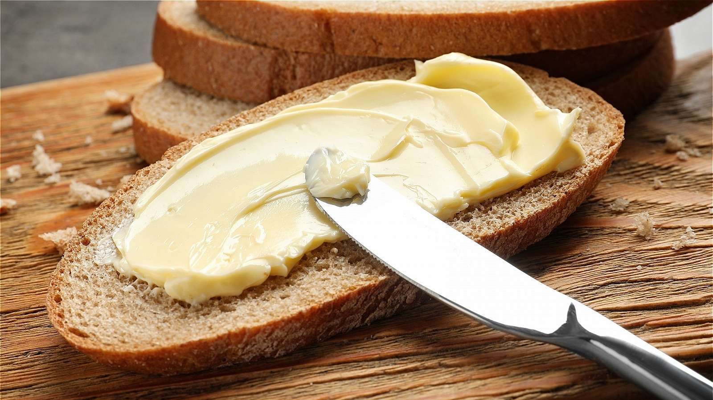

Home
Bread With Butter

Description:
This simple recipe is a classic snack. Toasted bread with a smooth layer of butter, perfect for a quick bite or to complement a meal.
Ingredients:
- 1 Slice of bread
- Butter (as needed)
Steps:
- Toast the bread slice until golden and crispy.
- Spread butter evenly on the warm toast.
- Serve immediately and enjoy!